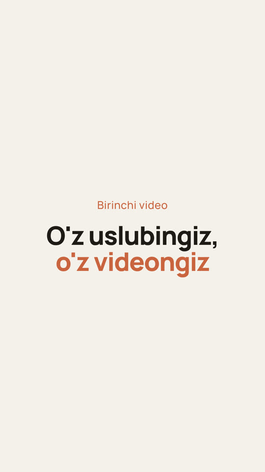
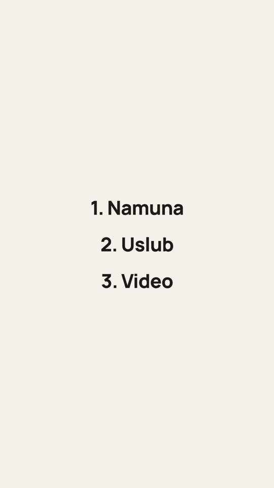
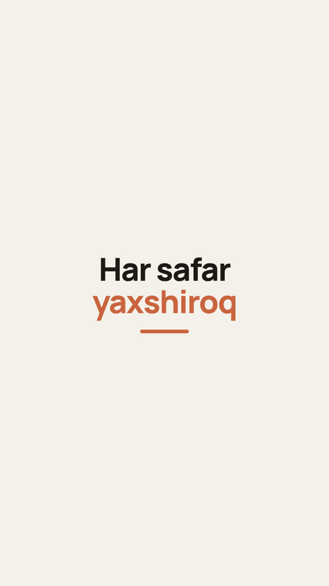

Claude sizning uslubingizda video yasaydi. Buning uchun dasturchi bo'lish shart emas. 4 ta tayyor prompt va 30 daqiqa vaqt kerak.
Bepul va ochiq. github.com/akbarship/motionable
Kompyuteringizda oddiy papka bo'ladi. Claude shu papka ichida ishlaydi: uslubingizni yozib oladi, video yasaydi va sizning izohlaringizni eslab qoladi.
Yoqqan 2 yoki 3 ta videoni berasiz. Claude ulardan rang, shrift va ritmni o'rganib, style.md fayliga yozadi.
Avval reja, keyin kadrlar, oxirida tayyor fayl. Har bosqichda "ha" yoki "o'zgartir" deysiz.
"Matn doim kattaroq bo'lsin" desangiz, bu lessons.md ga yoziladi. Ikkinchi marta aytish shart emas.
Fayllar oddiy matn. Xohlagan payt ochib, o'zingiz o'zgartirasiz. Hech narsa yashirin emas.
Video qanday paydo bo'ladi: Claude videoni veb sahifa sifatida yozadi, HyperFrames nomli bepul dastur uni MP4 faylga aylantiradi.
| Kompyuter | Windows, macOS yoki Linux. Telefon to'g'ri kelmaydi. |
| Claude ilovasi | Kompyuter uchun Claude ilovasi: claude.com/download |
| Claude obunasi | Pullik obuna (Pro yoki undan yuqori). Bepul tarifda papka bilan ishlash yo'q. |
| Namunalar | Sizga yoqqan 2 yoki 3 ta qisqa video fayl. Bo'lmasa ham boshlasa bo'ladi. |
video-loyiha.Claude kompyuterda biror ish qilishdan oldin ruxsat so'raydi. Bu oddiy holat. Buyruq shu papka ichida bo'lsa, ruxsat bering.
Boshqa dasturlar (Node.js, FFmpeg, HyperFrames) kerak bo'ladi, lekin ularni Claude o'zi o'rnatadi.
Shu qo'llanma oxirida to'liq berilgan. Nusxalash uchun qulay manzil: github.com/akbarship/motionable/tree/main/prompts
Claude kerakli dasturlarni o'rnatadi, papkalarni yaratadi va siz bilan tanishadi.
1-ornatish.md promptini to'liq nusxalab, chatga tashlang.
refs (namunalar), footage (sizning kadrlaringiz), videos (tayyor videolar).CLAUDE.md fayliga yoziladi. Bu Claude har safar o'qiydigan qoidalar varag'i.Papkada CLAUDE.md, style.md, lessons.md fayllari va uchta papka ko'rinadi. Claude keyingi qadamni aytadi.
Yoqqan videolaringizni refs papkasiga tashlang va yangi chat oching. Yangi chat shart: o'rnatilgan ko'nikmalar faqat yangi chatda ishga tushadi.
Claude namunalaringizni ko'rib chiqadi va uslubingizni aniq raqamlar bilan yozib oladi.
Namunaviy videolar refs papkasida ekanini tekshiring.
Yangi chatda 2-uslub.md promptini tashlang.
style.md fayli yoziladi: ranglar, shriftlar, matn o'lchami, subtitr, ritm, harakat."Namunasiz" deb yozing. Claude 5 ta savol beradi va uslubni javoblaringizdan tuzadi.
Bir xil ko'rinishdagi videolarni tanlang. Uch xil uslub aralashsa, natija ham aralash chiqadi.
Claude namunadan faqat uslubni oladi. Birovning logotipi, yuzi, matni yoki musiqasi ko'chirilmaydi.
Mavzuni yozasiz, qolganini Claude bajaradi. Har video yangi chatda.
3-video.md promptidagi kvadrat qavslarni to'ldiring: mavzu, davomiylik, kadr va ovoz.
O'z kadringiz yoki ovozingiz bo'lsa, oldin footage papkasiga tashlang.
out.mp4 fayli video papkasida paydo bo'ladi.


Misol: shu promptlar bilan yasalgan 9 soniyali sinov videodan uchta kadr. Sizning videongiz sizning uslubingizda chiqadi.
Kadr va ovoz bo'lmasa ham video chiqadi: matn va grafika bilan.
Bir marta aytgan izohingiz keyingi barcha videolarda ishlaydi. Loyiha shu tarzda sizga moslashadi.
4-saboq.md promptiga izohingizni yozib, chatga tashlang.
"Birinchi kadrda doim sarlavha turgan bo'lsin."
Bu har videoga tegishli qoida.
"Shu videoda uchinchi so'zni qizil qiling."
Bu bir martalik tuzatish.
lessons.md ga bitta qisqa qator bo'lib yoziladi.style.md ga yoziladi.lessons.md faylini oching va o'sha qatorni o'chiring. Yoki Claudega yozing: "shu saboqni o'chiring".
Claude obunasida foydalanish chegarasi bor. Shu odatlar bilan bitta obuna ko'proq videoga yetadi.
| Har video yangi chatda | Uzun chatda Claude eski yozishmalarni qayta o'qiydi. Yangi chat arzonroq. |
| Kadrda tuzating | Xatoni rasmda ko'rib tuzatish, tayyor videoni qayta yasashdan ancha arzon. |
| Aniq yozing | "Yaxshiroq qiling" o'rniga "sarlavha kattaroq, fon ochroq" deb yozing. |
| Fayllar qisqa bo'lsin | CLAUDE.md 60 qator, lessons.md 40 qator atrofida qolsin. |
Bu tayyor dastur emas, sizning loyihangiz. Uchta faylni xohlagancha o'zgartiring:
CLAUDE.md: ish tartibi. Masalan, "reja so'ramang, darhol kadrlarni ko'rsating" deb yozsangiz, Claude shunday ishlaydi.style.md: uslub. Yangi rang yoki shrift kerak bo'lsa, shu yerda almashtiring.lessons.md: saboqlar. Eskirganini o'chiring.Bu yo'lda hech qanday qo'shimcha kalit yoki to'lov shart emas. AI rasm, video yoki ovoz qo'shmoqchi bo'lsangiz, Claude avval sizdan ruxsat so'raydi.
Ko'p muammo bitta yo'l bilan hal bo'ladi: xatoni Claudega ko'rsating va "tuzating" deb yozing.
| Claude dastur o'rnata olmadi | U sizga havola va qisqa ko'rsatma beradi. O'rnatib, "tayyor" deb yozing. |
| Claude uslubga amal qilmayapti | Yangi chat oching. Birinchi qadamdan keyin yangi chat ochilmagan bo'lishi mumkin. |
| Kadrda matn kesilgan | Qaysi sahna ekanini ayting. Umumiy muammo bo'lsa, saboq sifatida saqlang. |
| Subtitrda so'zlar xato | Kompyuter o'zbek nutqini doim ham to'g'ri eshitmaydi. To'g'ri matnni chatga yozing, Claude almashtiradi. |
| Uslub yoqmay qoldi | Yangi namunalar bilan ikkinchi qadamni qayta bajaring. |
| Limit tez tugayapti | 8-betdagi odatlarni tekshiring. Eng ko'p yordam beradigani: har video yangi chatda. |
1. O'rnatish
2. O'z uslubingiz
3. Video yasash
4. Saboq, kerak bo'lsa
Savol va takliflar: github.com/akbarship/motionable sahifasida "Issues" bo'limi.
|
Ilova
PromptlarNusxalash uchun qulay manzil: github.com/akbarship/motionable/tree/main/prompts 1. O'rnatish prompts/1-ornatish.md {{P1}}
2. O'z uslubingiz prompts/2-uslub.md {{P2}}
3. Video yasash prompts/3-video.md {{P3}}
4. Saboq prompts/4-saboq.md {{P4}}
|